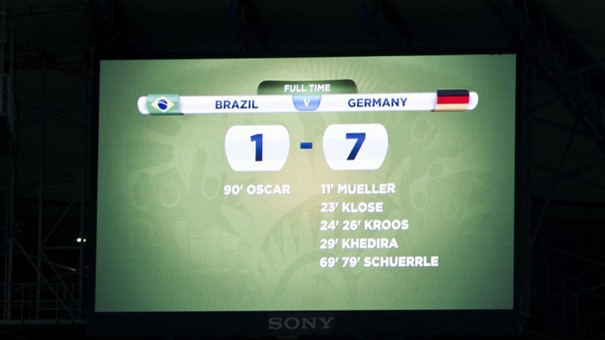

Die FIFA-Weltmeisterschaft 2014 in Brasilien war geprägt von einem ganz besonderen Ereignis, das die Herzen der Fußballfans höher schlagen ließ. Es war das Jahr, in dem Deutschland den vierten Stern auf seinem Trikot holte und zum Weltmeister gekrönt wurde. Das deutsche Team zeigte eine beeindruckende Leistung und spielte sich mit einer Kombination aus Teamwork, taktischer Disziplin und individueller Brillanz bis ins Finale vor. Dort trafen sie auf Argentinien, und das Spiel blieb bis zur letzten Minute spannend. Schließlich erzielte Mario Götze in der Verlängerung einen herausragenden Treffer und sicherte Deutschland den lang ersehnten WM-Titel. Dieser historische Moment brachte Freude und Stolz für die deutsche Nation, während sich die Spieler in den Armen fielen und die Fans auf der ganzen Welt jubelten. Die WM 2014 wird für immer in Erinnerung bleiben als das Turnier, in dem Deutschland seinen Fußballzauber zum Höhepunkt brachte und den Cup nach Hause holte.
